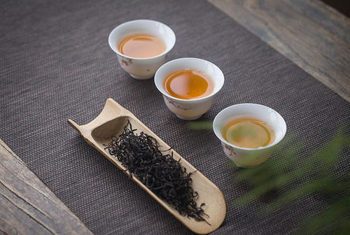
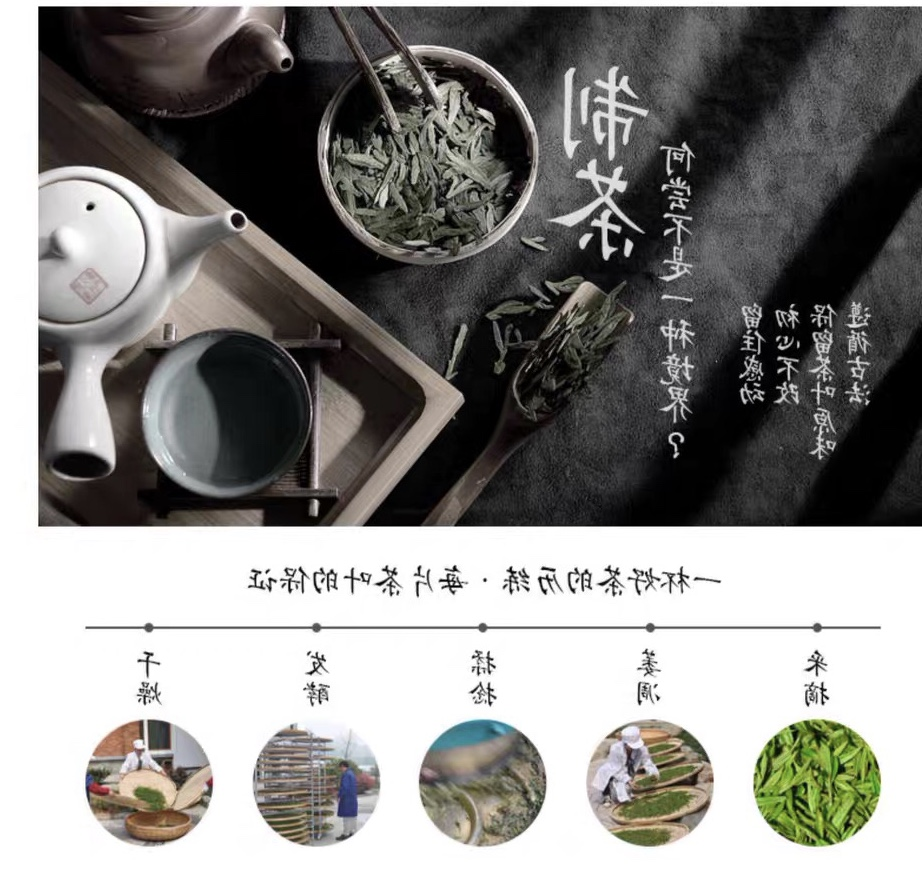

九曲红梅 又叫“龙井红茶”，是西子湖畔的百年红茶，其源于杭州西湖灵山“九曲十八湾”的地理特征，是浙江名茶中唯一的红茶，更被誉为浙江茶区“万绿丛中一点红”。早在1886年，就获巴拿马世界博览会金奖。
1

外形条索细若发丝，弯曲细紧如银钩，抓起来互相勾挂呈环状，披满金色的绒毛；色泽乌润；滋味浓郁；香气芬馥；汤色鲜亮；叶底红艳成朵。九曲红梅茶系工夫红茶，品质优异，风韵独特，色香味形俱佳，是优越的自然条件、优良的茶树品种与精细的采摘方法、精湛的加工工艺相结合的产物。
2

取一芽一二叶，芽叶秀丽嫩软，复活于水中。一瓯九曲红梅，茶芽在水中润开。枣红的叶张舒展，形若孤山的梅花开放。色泽乌润，清如红梅、滋味浓郁、香气芬馥，四溢的茶香，又似梅花的清香萦绕。以蜡梅薄胎茶杯盛茶汤，汤色红艳眀亮，含英咀华，醇柔回甘中如有红梅清香，令人想到咏梅之诗“素艳雪凝树，清香风满枝”。
3

生产步骤 采摘、萎凋（萎凋是红茶的第一道工序）、揉捻、发酵、干燥。
4